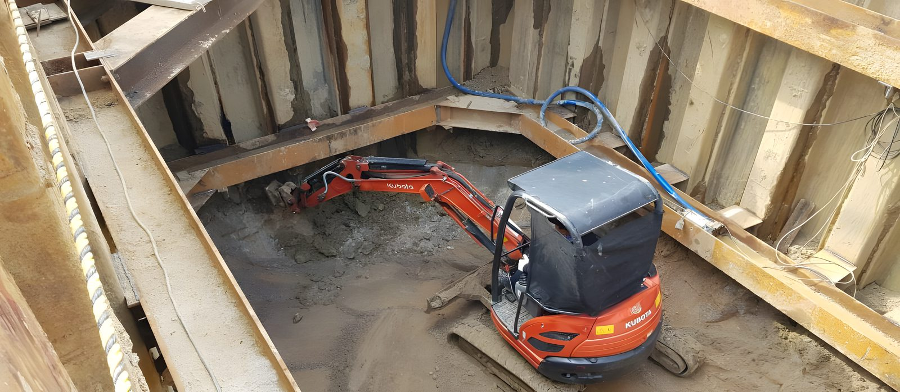
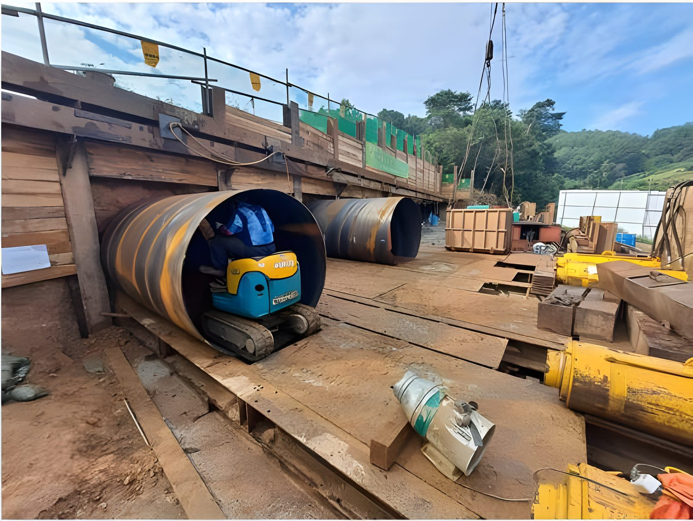
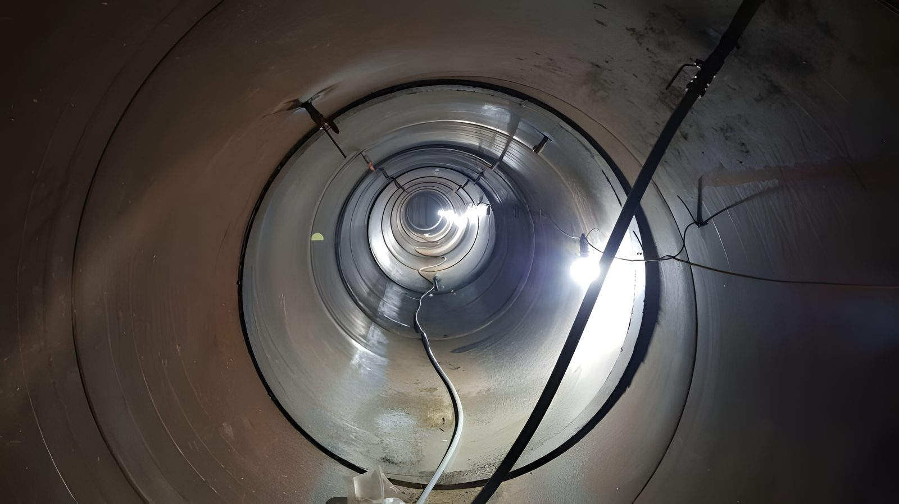
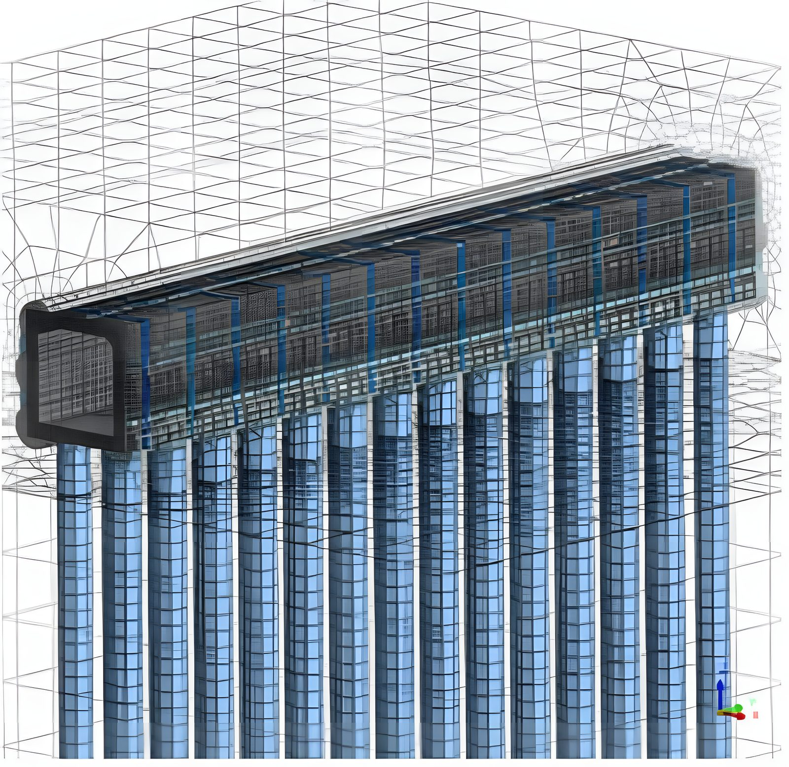

공용 중인 도로·철도 하부에 대구경 강관을 압입하고, 강관 내부를 일체화한 뒤 굴착하여 개착 없이 지하 구조물을 완성합니다. Tunnel of using Steel pipe Method.
추진기지에서 시작해 구조물 완성까지. 상부 교통은 전 과정에서 정상 소통합니다.
강관을 밀어 넣을 발진기지와 반력벽을 설치합니다. 상부 교통에 영향이 없는 위치에 조성합니다.
유압잭으로 대구경 강관(D1,200~3,000)을 수평 압입합니다. 선도관 조정장치로 정밀 선형을 유지하며, 곡선(R=60m) 시공 실적을 보유하고 있습니다.
강관 외부 공극에 약액을 주입해 차수하고 주변 지반을 보강합니다. 침하를 원천 차단하는 공정입니다.
강관 사이 격벽철판을 용접 일체화합니다. 별도 방수재 없이 확실한 방수 구조가 형성됩니다.
강관 내부에 H-Beam을 설치해 굴착 전 구조 강성을 확보합니다.
일체화된 강관 루프의 보호 아래 내부를 굴착합니다. 저토피(도로 1.0m · 철도 노반 0.5m) 조건에서도 안전하게 진행됩니다.
바닥 슬래브 기초를 타설합니다.
벽체를 타설해 강관과 철근콘크리트의 합성 구조물을 완성해 갑니다.
상부 슬래브 타설 후 가설 지보를 해체하면, 개착 한 번 없이 지하 구조물이 완성됩니다.




같은 "강관 루프"라도, 강관의 크기와 내부에서 할 수 있는 일이 다릅니다.
숫자는 전부 실제 시공 실적 기준입니다.
| 적용 강관 직경 | D1,200 ~ 3,000mm — 대구경 중심 |
|---|---|
| 최소 토피고 | 도로 1.0m · 철도 노반 0.5m |
| 단일 구간 최장 추진 | 173.8m (고양 향동 · 덕은지구, D1,430) |
| 최대 단면 | B25.9 × H5.2m (평택~부여~익산 고속도로, 강관 D1,800) |
| 곡선 선형 | R=60m (동대구역 복합환승센터, 연암 · 경암 구간) |
| 구조물 유형 | BOX(지하차도 · 통로암거) · 원형관로(상수 · 인입) · 다경간 병렬 |
| 부대 공법 | E.G.R 약액주입 (차수 · 지반보강, 친환경 실리카졸계) · SGR · LW |
공법 개요 · 시공순서 · 구조 검토 · 시공실적을 담은 공식 설명서입니다. 설계 검토와 견적 요청에 바로 활용하십시오.